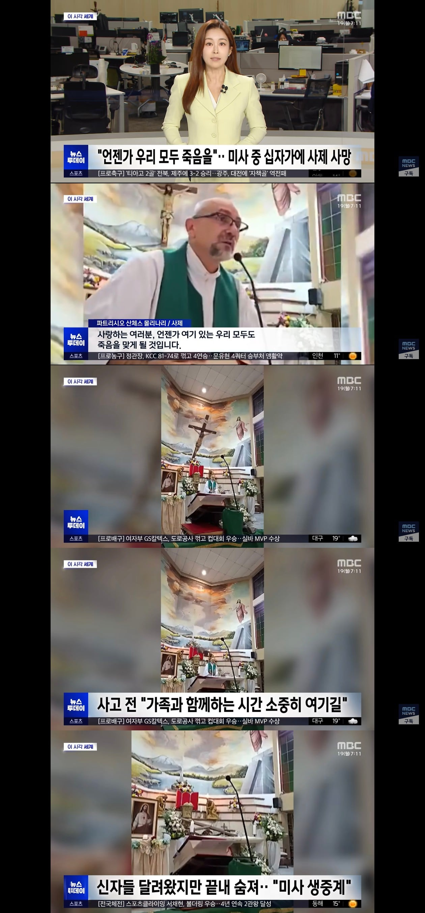

...뭔가 아이러니 하네...

...뭔가 아이러니 하네...
그니까 종교인이 저 장면을 단순사고라고 연관짓는건 굉장히 힘든 일임 ㅋㅋ
내가 종교인이이면 저거 직관하면 바로 배교함.
네, 선생님의 의견 존중합니다
당연히 해야지
종교는 미신이니까
미신이지만 문화이고 신념임. 의미는 부여하기 나름이고 남이 무엇에 의미를 부여하든 그걸 조롱하는건 미신을 믿는것보다 더 바람직하지 못한 삶의 태도임.
종교인이면 저거 보고 배교하는게 아니고 더 심취하지
개드립 초식인데 일단 종교를 패고 여의치않으면 십자가 떠발이시공을 패면 됨 ㅋㅋㅋㅋㅋㅋ
종교를 팰 이유까진 없고 아따 예수가 데려갔당께유 ㅠㅠ 이지랄은 왜하는지 모르겠음
그냥 인명사고임
호상이네
참 아이러니 하네
어제 올라왔는데 삭제된거같은데 거기서도 드립치는 개병신들 개많았는데 똑같구만ㅋㅋ
급한일이 있었나
신의 뜻인가요?
댓글들 뭐냐 와....
마니가 저리 되어야하는데
단순 사고지 저게 골고다 언덕에 박힌 진짜 십자가고 진짜 예수는 아니잖아